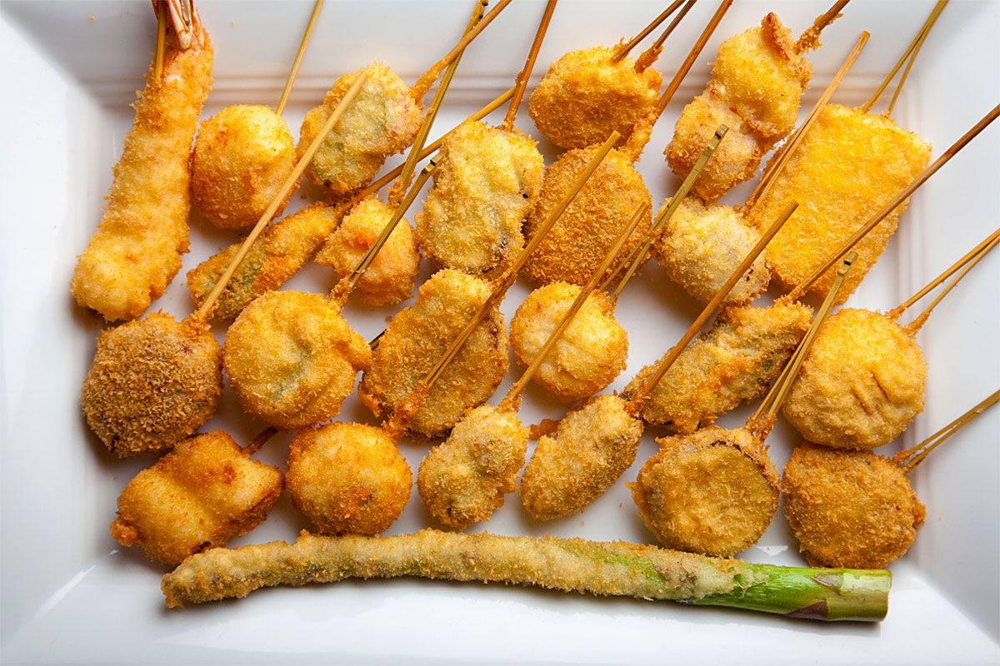

Kushikatsu
Home
Kushikatsu, or kushiage, refers to deep-fried skewers of fruit, proteins, or vegetables served with a thin, savory dipping sauce. In Japanese, kushi refers to the bamboo skewers, while katsu refers to a cutlet (as in tonkatsu, fried pork cutlets), and age means fried.

Ingredients
1 cup panko breadcrumbs
½ cup Worcestershire sauce
3 tspn soy sauce
3 tspn sugar
¾ cup flour
1 egg, beaten
1 tbspn water
Vegetable oil
2 lbs assorted vegetables
fresh seafood/meat
Nutrition Facts
calories 306
Total Fat 23.3g
Cholestero 10mg
Sodium 209mg
Total Carbohydrate 9.79g
Vitamin C 2.19mg
vitamin A 1.75mg
Procedure
Thread the assorted filling ingredients onto bamboo skewers and set aside.
Pulse the panko in a food processor until it reaches the consistency of coarse sand, then transfer it to a plate.
To make the sauce, whisk together the Worcestershire sauce, soy sauce, and sugar with 2 tablespoons of water until the sugar dissolves. Taste, and adjust to preference.
To make the batter, whisk together the flour and egg mixture, adding more water a tablespoon at a time until the consistency is thick enough to coat the back of a spoon but thin enough that it’s still runny.
Heat 2 inches of oil in a large cast-iron skillet over medium-high heat. (The oil should be deep enough to submerge the skewers when laid into the pan at an angle.)
When the oil is ready, coat each round of skewers in batter and panko. Fry them until golden brown and crisp, using the lightest ingredients first. Skim off any bits of batter from the oil between rounds, and transfer the finished skewers to a wire rack. Repeat with the remaining skewers, and serve with the sauce on the side.
Expert Guide
Back ←
Scroll to Top ↑